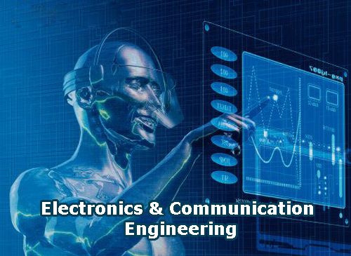

Introduction to Electronics and Communication
Electronics and Communication is a foundational field of science and engineering that deals with the study, design, and implementation of electronic circuits, devices, signals, and networks
mailamengg.ac.in
. At its core, it bridges the gap between hardware (electronics) and the transmission of data (communication), enabling the creation of systems that can process and transmit information across distances
www.instagram.com
.
Core Pillars of the Field
The discipline encompasses several key areas that work together to power modern technology:
Analog and Digital Electronics: The foundation of circuit design, microprocessors, and semiconductor devices that form the hardware of all modern gadgets
cuchd.in
.
Signal Processing: The manipulation, analysis, and management of signals (such as audio, video, and data) to ensure efficient and error-free transmission and reception
set.jainuniversity.ac.in
.
Telecommunications: The infrastructure and protocols that enable data transfer over long distances, including wireless networks, fiber optics, and satellite communication systems
www.sathyabama.ac.in
.
Embedded Systems and IoT: The integration of computing and communication capabilities into physical devices, forming the backbone of smart technology and the Internet of Things (IoT)
cuchd.in
.
Importance in Modern Life
Electronics and Communication is the invisible backbone of contemporary society. It is responsible for developing and testing the electronic circuits and communication devices like transmitters and receivers that make our daily technology possible
in.indeed.com
. From smartphones, high-speed internet, and GPS navigation to advanced medical imaging equipment and modern automotive systems, this field enables global connectivity and real-time data exchange
www.msruas.ac.in
.
Future Trends and Innovations (2025–2026 and Beyond)
As we progress through 2026, the field is rapidly evolving, driven by the fusion of emerging technologies. Key trends shaping the future include:
Next-Generation Networks (5G/6G): While 5G technology continues to expand globally, early research and prototyping for 6G are already underway, promising more intelligent, resilient, and expansive communication networks
cuchd.in
.
Artificial Intelligence and Machine Learning: AI is becoming commonplace in engineering workflows, ranging from AI-assisted generative design and predictive maintenance to AI-powered automation in smart electronics manufacturing
www.asme.org
.
Semiconductor Advancements: There is a massive global push toward advanced semiconductor design and domestic manufacturing to support the growing demand for computing power and specialized chips
www.instagram.com
.
Sustainability and Circular Design: The industry is increasingly focusing on eco-friendly materials, energy-efficient designs, and "right-to-repair" frameworks to reduce electronic waste and promote sustainable consumer electronics
www.linkedin.com
.
Conclusion
Electronics and Communication is not just a surviving discipline; it is a primary driving force of the Fourth Industrial Revolution
www.surtech.edu.in
. By continuously integrating advancements in AI, robotics, nanotechnology, and advanced networking, this field will remain at the forefront of shaping our digital future and solving complex global challenges
learn.kce.ac.in
.Electronics and Communication Engineering (ECE) is the branch of engineering focused on designing, developing, and testing electronic devices, circuits, and communication systems. It bridges the gap between hardware and software, driving modern technological infrastructure like smartphones, satellite networks, and the Internet of Things (IoT).A comprehensive program in ECE builds a foundation through several core disciplines:Electronic Circuits: Analyzing how resistors, capacitors, diodes, and transistors are used to build amplifiers and oscillators.Digital & Analog Electronics: Processing continuous signals (analog) or handling discrete binary (digital 0 and 1) logic, which forms the core of computing devices.Signals and Systems: Using techniques like Fourier analysis to process and transmit